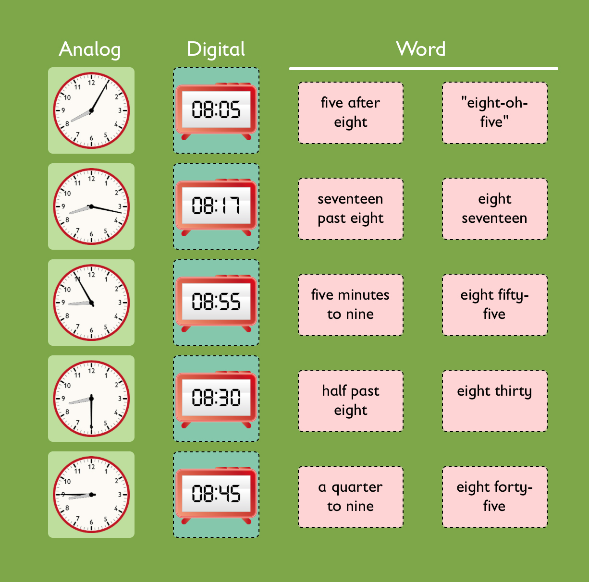
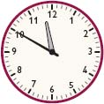
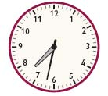
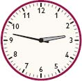

Allow students who have a clear understanding of the content thus far in the unit to work on Gallery problems of their choosing. You can then use this time to provide additional help to students who need review of the unit's concepts or to assist students who may have fallen behind on work.
In this card sort, students sort cards with analog clocks, digital clocks, and the time using words.
Students will read and write the time shown by clocks.
Students will look at three examples of reading a clock and tell whether each one is correct.
Students will solve four math stories and explain how they are different.
Students make a schedule of their activities during the day. They will write the start and end times for each activity, then find out how much time was spent on each activity.
Students will solve two math stories without using addition or subtraction. Then they will explain their thinking.
Students will compute and write a variety of times before and after 11:57.
Students help Zoe put the clocks in order to match what she did in the morning.
Students solve three problems about elapsed time.
Sample of a filled in interactive card sort.
3:18; 12:03; 5:55
Diagrams of clocks with the hands correctly drawn.
a. 11:50

b. 6:35
c. 7:32

d. 2:47

Example of diagram with lines connecting digital readings to matching analog clocks.
Each student mistake addresses a common error in reading the analog clock.
Kentasha is not correct. Possible answer: Although the hour hand is close to 9, it not yet at 9. Because the hour hand moves from 8 to 9 as the hour passes, the hour hand will be close to 9 when it is 8:56.
Abdul is not correct. Possible answer: The numerals on the clock face tell the nearest hour, not the number of minutes after the hour. Since the minute hand is pointing to 5, counting by 5s results in 5, 10, 15, 20, 25 minutes past 10 o’clock, or 10:25.
Jasper is correct. Possible answer: The hour hand is between the 2 and the 3, so the hour is 2. The minute hand is 57 minutes after the hour. The time is 2:57.
Solution methods will vary. Possible methods are shown.
Problem A
It is now 2:10.
Start time is 1:25.
5 minutes is 1:30.
30 minutes is 2:00.
10 minutes is 2:10.
Problem B
Zoe worked for 30 minutes, or a half hour.
She started at 1:45.
She stopped at 2:15.
15 minutes to 2:00
15 minutes to 2:15
15 min + 15 min = 30 min
Problem C
Abdul started at 1:40.
He stopped at 2:15.
15 minutes before is 2:00
15 minutes before that is 1:45
5 min before that is 1:40
Problem D
Chan spent 45 minutes setting up chairs.
Answers will vary. Possible answer: What is different about the math stories is what you want to find out and what you know in each problem.
One way to discuss this with students is to create a chart like the one shown. The information that is given in a problem is shown with an X, and what you want to find out is the blank cell, except in Problem D which simply requires adding the two amounts of time Chan spent setting up chairs.
Answers will vary. Entries in the chart will vary from student to student depending on their daily activities.
Zoe spent more time reading. Possible answer: Zoe read for more than an hour and Chan read for less than an hour:
| Zoe | An hour past 6:25 is 7:25. Zoe read until 7:38, which is after 7:25. |
| Chan | An hour after 5:55 is 6:55. Chan read until 6:49, which is before 6:55. |
Yes, the movie should be over by 3:30. Possible answer: The movie listing says the movie is less than 2 hours long. Because 2 hours after 1:15 is 3:15, it is likely the movie will be over by 3:30.
In 2 min, it will be 11:59.
The time 2 min ago was 11:55.
In 20 min, it will be 12:17.
The time 20 min ago was 11:37.
In 2 hr, it will be 1:57.
The time 2 hr ago was 9:57.
In 12 hr, it will be 11:57.
The time 12 hr ago was 11:57.
Diagram of correctly ordered clock faces.
José went out to play at 3:42.
José stopped playing at 5:12.
José played for 90 minutes, or 1 hour and 30 minutes. Solution methods will vary.
Kentasha started reading at 6:48.
Kentasha stopped reading at 7:23.
Kentasha read for 35 minutes. Solution methods will vary.
Abdul started washing the dishes at 6:55.
Abdul stopped washing the dishes at 7:18.
Abdul washed the dishes for 23 minutes. Solution methods will vary.